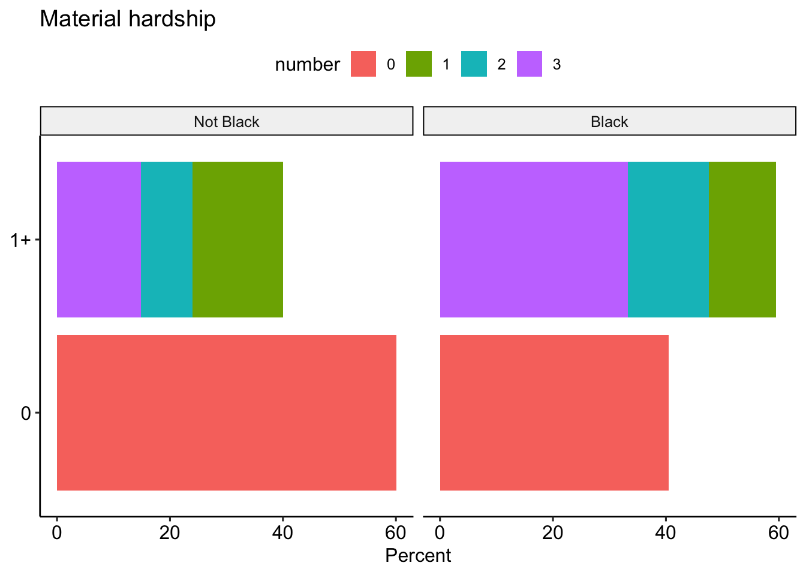

Social Support II
Representativeness disclaimer
These analyses are based on responses collected from 8867 caregivers between the dates of April 06, 2020 and August 13, 2020. These caregivers represent a range of voices: 8.66% are Black/African American, 16.62% are LatinX, and 29.25% live at or below 1.5 times the federal poverty line. Proportions/percentages are calculated based on the item-level response rates, not out of the total sample size. The data for these analyses are not weighted.
Material hardship
Old questions
Number (overall)

Number (Black/African American)
Number (by income)
At least one hardship (overall)
At least one hardship (Black/African American)
At least one hardship (LatinX)
At least one hardship (White)
At least one hardship (by income)
At least one hardship (by employment)
New questions
Food
How worried are you about having enough money to pay for food to feed your household for the next month?
Overall
Income
Black/African American
Employment
Eviction
If you rent the place where you currently live, how worried are you about being evicted in the next month?
Overall
Income
Black/African American
Employment
Foreclosure
If you own the house you currently live in, how worried are you that the mortgage will be foreclosed in the next month?
Overall
Income
Black/African American
Employment
Utilities
How worried are you that your utilities (water, electricity, gas) will turn off in the next month?
Overall
Income
Black/African American
Employment
All
Note that foreclosure and housing were combined into a single variable.
Overall

Income

Black/African American

LatinX

White

Single

Unemployed

Social support
Note that for single caregivers, responses to “partner/spouse” support are removed.
Source of support
Children as support
Ages
Number per household
Type of support
Type of support by age